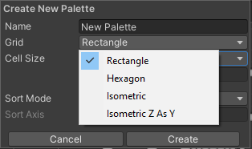
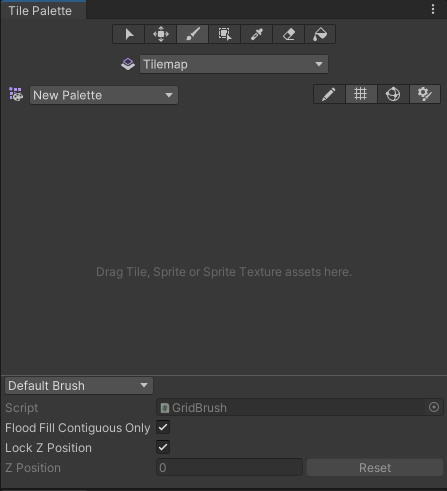
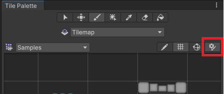
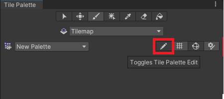
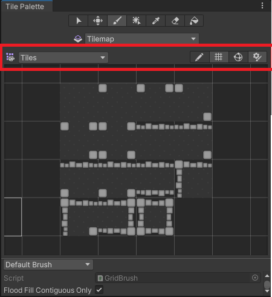
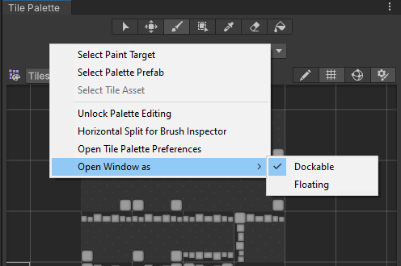

Creating a Tile Palette
Place a selection of Tiles onto Tile Palettes so that you can pick Tiles from the Palette to paint on Tilemaps. To create a Tile Palette, open the Tile Palette window by going to Window > 2D > Tile Palette. If you do not have this option, then the 2D Tilemap Editor package may not be installed. If so, download the 2D Tilemap Editor package from the Package Manager.
The Tile Palette window is empty by default. Select the New Palette drop-down menu to open a list of Tile Palettes available in the Project, or for the option to create a new Palette. Select the Create New Palette option to create a new Palette.

Select the Create New Palette option from the dropdown menu.
After selecting the option to create a new Tile Palette, the Create New Palette dialog box becomes available. It contains the different property settings and options available when creating a new Palette:

The Create New Palette options.

The expanded Grid options.
Create New Palette properties
| Property | Function | |
|---|---|---|
| Name | Provide a name for the created Tile Palette Asset. | |
| Grid | Select the Grid layout the created Tile Palette will be used to paint on. | |
| Rectangle | Select this if creating a Palette for the default rectangular TilemapA GameObject that allows you to quickly create 2D levels using tiles and a grid overlay. More info See in Glossary. |
|
| Hexagon | Select this when creating a Palette for a Hexagonal Tilemap. | |
| Isometric | Select this when creating a Palette for a Isometric Tilemap. Refer to Creating a Tile Palette for an Isometric Tilemap for more information. | |
| Isometric Z as Y | Select this when creating a Palette for a Isometric Z as Y Tilemap. Refer to Creating a Tile Palette for an Isometric Tilemap for more information. | |
| Hexagon Type (only available when the Hexagon Grid type is selected) | Select the type of Hexagonal Tilemap that the Palette will be used to paint on. Refer to the documentation on Hexagonal Tilemaps for more information. | |
| Cell Size | The size of a cell that the Tiles are painted on. | |
| Automatic | The Cell Size is automatically set in Unity unitsThe unit size used in Unity projects. By default, 1 Unity unit is 1 meter. To use a different scale, set the Scale Factor in the Import Settings when importing assets. See in Glossary and based on the size of the SpriteA 2D graphic objects. If you are used to working in 3D, Sprites are essentially just standard textures but there are special techniques for combining and managing sprite textures for efficiency and convenience during development. More info See in Glossary used to create the Tile Assets. If there are multiple Tiles, the Cell Size is adjusted to match the first Tile from the bottom left of the Palette, so that it fits exactly on a cell. |
|
| Manual | Select this option to input custom size values. | |
| Sort Mode | Determines the transparency sort mode of Renderers in the Tile Palette. | |
| Default | The default transparency Sort Mode. This mode is determined by the Graphics Settings of the project. | |
| Orthographic | Select this mode to sort Renderers based on the perpendicular distance from the cameraA component which creates an image of a particular viewpoint in your scene. The output is either drawn to the screen or captured as a texture. More info See in Glossary to a Renderer in the Tile Palette. |
|
| Perspective | Select this mode to sort Renderers based on the direct distance from the camera to a Renderer in the Tile Palette. | |
| Custom Axis Sort | Select this mode to sort objects based on their distance along a custom axis. | |
| Sort Axis | Set the XYZ values for the sorting axis, if the Sort Mode is set to Custom Axis Sort. | |
Name the newly created Palette and select the desired settings, then select the Create button. Select the folder to save the Palette Asset file into when prompted. The newly created Palette is automatically loaded in the Tile Palette window.

A blank Tile Palette
Drag and drop Textures or Sprites from the Assets folder onto the Tile Palette, and choose where to save the new Tile Assets when prompted. New Tile Assets are generated in the selected save location, and the Tiles are placed on the grid of the active Tile Palette window.

Drag and drop directly onto the Tile Palette window.
Use the following shortcuts and actions to navigate the Palette window and begin picking Tiles to paint on the Tilemap in the Editor window.
| Shortcut/Action | Function |
|---|---|
| Click on a Tile | Selects the Tile |
| Select and drag the mouse over multiple Tiles | Selects multiple Tiles |
| Alt + Left button and drag | Pan |
| Click the wheel button and drag | Pan |
| Rotate the wheel button | Zoom in/out |
Active Brush inspector
The Active Brush inspectorA Unity window that displays information about the currently selected GameObject, asset or project settings, allowing you to inspect and edit the values. More info
See in Glossary is at the bottom of the Tile Palette window and is minimized by default. To expand it, drag the bottom toolbarA row of buttons and basic controls at the top of the Unity Editor that allows you to interact with the Editor in various ways (e.g. scaling, translation). More info
See in Glossary upwards. Use inspector to change the current active Brush and its properties.

Brush dropdown menu set to the Default Brush.
Use the Brush dropdown menu to change the active Brush from the Default Brush to other Brushes, such as Scriptable Brushes.
| Property | Function |
|---|---|
| Script | Displays the currently assigned script Asset that provides a fixed set of APIs for painting on Tilemaps. The default is the GridBrush. Users may use or create their own Scriptable Brushes which become available from the dropdown menu. The Script property updates to reflect the current active Brush. |
| Flood Fill Contiguous Only | Enable this property to have the Flood Fill tool only affect Tiles on a Tilemap which are both the same as the targeted Tile and are contiguous to each other from the targeted position. When disabled, Flood Fill will change all Tiles which are the same as the targeted Tile on a Tilemap regardless of their position. This only affects the Default Brush. |
| Lock Z Position | Enable this property to change the z-position of the active Brush. Disable to prevent any changes to the current z-position of the active Brush. |
| Z Position | Only available when Can Change Z Position is enabled. Enter the desired z-axis value (only whole numbers) for this Brush when painting Tiles, which also adjusts the relative heights of Tiles on a Z as Y Isometric Tilemap . Refer to Adjusting the Tile height in the Palette for more information. |
| Reset | Select to reset the z-position value back to zero. |

Expand or contract the inspector with the highlighted toggle.
Editing the Tile Palette
The tools for picking and painting with Tiles can also be used to edit the Tile Palette directly, allowing you to move and manipulate the Tiles currently placed on the Tile Palette. Select the Palette you want to edit from the Palette dropdown menu (the default Palette is named ‘New Palette’), then select Edit to unlock the Palette for editing.

The Tile Palette Edit toggle.
Refer to Painting on Tilemaps for the shortcuts and functions of the Palette tools, which can also be used to edit the Palette.
Creating Palette Assets from existing Grid Prefabs
You can convert an existing PrefabAn asset type that allows you to store a GameObject complete with components and properties. The prefab acts as a template from which you can create new object instances in the scene. More info
See in Glossary to a Palette Asset, so that you can use it in the Tile Palette window. To do this, the Prefab must not already be a Palette Asset, and it must have a Grid component on its topmost GameObjectThe fundamental object in Unity scenes, which can represent characters, props, scenery, cameras, waypoints, and more. A GameObject’s functionality is defined by the Components attached to it. More info
See in Glossary.

The Tile Palette toolbar
To convert a Prefab, drag and drop it onto the Tile Palette toolbar (highlighted in the image above). The Editor automatically converts it to a Palette Asset, and adds a Grid Palette Asset. The new Palette Asset has the same name as its source, and it becomes available in the Palette dropdown menu.
Tile Palette Grid visibility toggle

The Tile Palette Grid toggle.
Switch the visibility of the Grid on the Tile Palette on or off by selecting the toggle highlighted above.
Tile Palette Gizmos visibility toggle
The Tile Palette can display GizmosA graphic overlay associated with a GameObject in a Scene, and displayed in the Scene View. Built-in scene tools such as the move tool are Gizmos, and you can create custom Gizmos using textures or scripting. Some Gizmos are only drawn when the GameObject is selected, while other Gizmos are drawn by the Editor regardless of which GameObjects are selected. More info
See in Glossary over the currently selected Palette Asset, to help you visualize specific criteria. For example, you can add a Gizmo that displays a special icon for Tiles that contain no Sprites.

The Tile Palette Gizmos toggle.
To display the default Unity and the Palette Asset’s Gizmos on the Tile Palette, enable the Gizmos toggle (highlighted above). The Tile Palette immediately displays any component with MonoBehaviour.OnDrawGizmos() in the Palette Asset.
To add your own custom gizmos to a Palette Asset, add a component with DrawGizmo to the Palette Asset:
- Select the Palette Asset in the Project windowA window that shows the contents of your
Assetsfolder (Project tab) More info
See in Glossary. - Open the Palette Asset in Prefab Mode.
- Add the component while in Prefab Mode.
- Save the Asset while in Prefab Mode.
- Exit Prefab Mode.
Tile Palette contextual menu

The expanded context menu.
Right-click on the Tile Palette toolbar to bring up a contextual menu listing several actions you can use to select and locate objects that the Tile Palette interacts with. The available actions are:
| Action | Function | |
|---|---|---|
| Select Paint Target | Selects the GameObject in the Hierarchy window that is the current target of the Active Tilemap in the Tile Palette. | |
| Select Palette Prefab | Selects the currently active Palette Prefab Asset in the Project window. | |
| Select Tile Asset | Selects the currently selected Tile Asset in the Project window. | |
| Unlock/Lock Palette Editing | Unlocks or locks the Tile Palette for editing. | |
| Open Window as | The style of window. | |
| Dockable | Opens the window as a dockable window, which can be docked in the Editor. | |
| Floating | Opens the window as a floating window, which displays on top of the Editor. | |